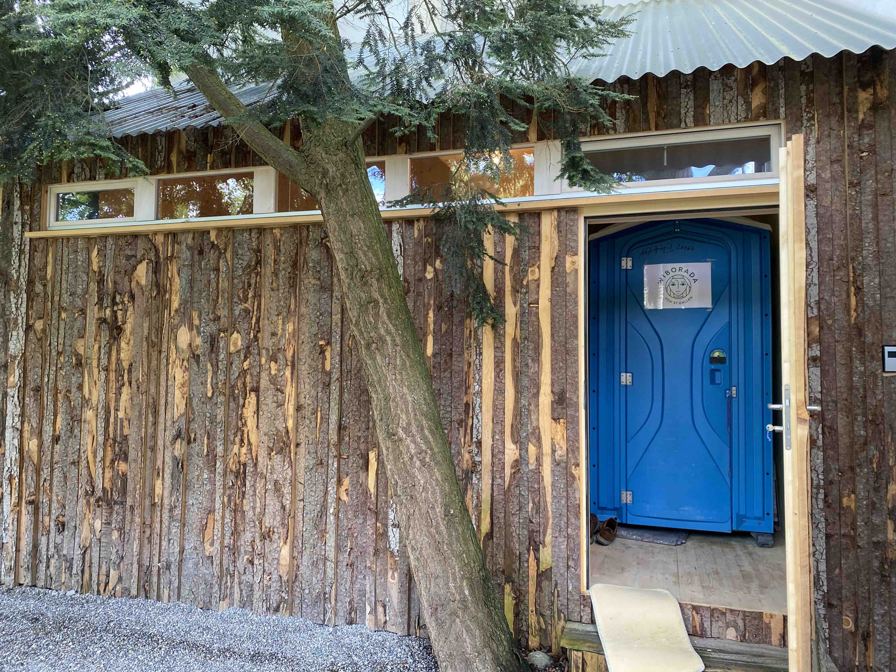

Viel spartanischer geht es nicht mehr: ein schmales Bett, ein Tisch mit zwei Stühlen und nebenan ein Toi-Toi, auf ungefähr sechs Quadratmetern. Der einzige Kontakt mit der Aussenwelt ist ein kleines Fenster zum Chor der Kirche St. Mangen und ein zweites gegen aussen. In St. Gallen lebten von April bis Juni 2023 nacheinander fünf Menschen dieses einfache Einsiedler:innenleben nach. «Wiborada 2021: die vergessene Heilige»: Unter diesem Namen wurde 2021 das ökumenische Projekt ins Leben gerufen. Dafür wurde die Wiboradazelle nachgebaut und bleibt bis 2026 bestehen (Wiborada 2021–2026) – 1100 Jahre nach Wiboradas Martyrium. Das Ziel ist, die erste durch einen Papst heiliggesprochene Frau und Märtyrerin bekannter zu machen. Es ist eine Initiative, die sich dem Leben und Wirken der Heiligen Wiborada (ca. 880–926 n.Chr.) an dem Ort annähern will, an welchem sie eingemauert ihr Leben als Einsiedlerin verbrachte und starb. Heute wirkt der nachgebaute hölzerne kleine Anbau an der Aussenwand der Kirche St. Mangen fast wie ein einladendes Ferienhäuschen: «Es ist eine neue Erfahrung. Es sind Ferien. Eine bescheidene Woche Ferien.» (Dürr, 2023). So beschreibt der aktuelle Inkluse Stefan Dürr das Erlebnis. Was heute ein Erlebnis ist, war Wiboradas bewusst entschiedener Lebensweg.
Die an die Kirche St. Mangen angebaute Holzzelle mit spartanischer Einrichtung und sanitärem Toi-Toi (mobile Toilettenkabine mit Waschbecken). (Bild: Andrea Mösching)
«Von der Wiege an ihrem allmächtigen Schöpfer ergebe[n] …»
So schrieb Mönch Ekkehard I. (ca. 910–973 n.Chr.) in Wiboradas Vita.
Wiborada entstammte einer adeligen Familie, wobei ihr Geburtsjahr wie
auch der Ort nicht überliefert sind. Wiborada entschied sich früh für
einen eigenen Lebensstil und folgte ihrem spirituellen Weg. Sie wollte
dienen, ernährte sich vegetarisch und kleidete sich einfach. Ihren
täglichen Kirchgang ging sie oft barfuss. Ihr Start ins Leben war nicht
von Armut geprägt und der Wechsel zu einem einfachen Leben in der
Einsiedelei eine bewusste Wahl. Sie stellte sich ganz in den Dienst
Gottes, indem sie den Menschen dienend als Beraterin und Seelsorgerin
zur Verfügung stand.
Für die Menschen zu beten, die an das offenen Fenster kommen ist ein
Kriterium, welches die Bewerbenden für das Projekt
Wiborada 2021–2026 erfüllen müssen, um eine Woche in die
nachgebaute Zelle einziehen zu dürfen. Bisher gab es zehn Teilnehmende,
die eine Woche in Selbsterfahrung die Zelle bewohnten. Sie wurden für
diese Woche mit zahlreichen Coachings und Workshops vorbereitet.
Wiborada dagegen verbrachte ihre letzten zehn Lebensjahre als Inklusin
in der gemauerten Zelle. Sich einmauern zu lassen, war ihre
Lebensentscheidung. Sie trug stets eine Eisenkette um ihren Körper und
fand einen gewaltsamen Tod, ohne je wieder einen Fuss über eine Schwelle
gesetzt zu haben.
Die Öffnung von der Wiborada-Zelle in die Kirche St. Mangen. (Bild: Andrea Mösching)
Vom Einüben als Einsiedlerin
Auch Wiborada traf Vorbereitungen für ihren Schritt in die Zelle: Vier
Jahre verbrachte sie in einer abgeschiedenen Hütte in St. Georgen. Ihre
beiden Dienerinnen Kebini und Pertherad begleiteten sie dabei. Ungefähr
im Jahre 916 n.Chr. liess sie sich dann schliesslich in der Zelle an der
Aussenwand der Kirche St. Mangen einmauern. Seither war sie Beraterin
und Seelsorgerin und gab ihre Visionen, welche sie durch Träume hatte,
an viele Menschen weiter. Die heutigen ‹Kurzzeit-Bewohnenden› der Zelle
können durch das zu fixen Zeiten für Ratsuchende geöffnete Fenster
zumindest ein bisschen in die Berater:innen-Rolle schlüpfen. Wie sehr
Wiboradas Leben hinter den Mauern einem ‹Einsiedlerin-Dasein› glich,
kann nur angenommen werden. Die Quellen lassen erahnen, wie viele
Menschen von ihren Ratschlägen profitieren konnten – zumal Heilige mit
prophetischen Gaben wie die der Wiborada hochgeschätzt waren und ihr
Name Zeugnis davon ablegt: Wiborat – Frauen-Rat.
Es gab eine entscheidende Vision, welche Wiborada bekannt gemacht hat.
Im Jahr 926 n.Chr. – zehn Jahre nach ihrer Inkludierung – sah sie in
einem Traum die Ungaren in das Land einfallen. Sie trug dem Abt
Engilbert († ca. 934 n.Chr.) auf, alle Menschen zu evakuieren. Zudem
forderte sie ihn auf, Bücher und Handschriften des Klosters St. Gallen
und den Kirchenschatz in Sicherheit zu bringen. Ein entscheidender Rat,
der den theologisch bedeutsamen Schatz des Klosters für die Nachwelt
gesichert hat. Wiborada selbst entschied sich gegen die Bitte des Abtes
und für ihr Gelübde, sie hielt an ihrem Zeugnis für ihren Glauben an
Jesus Christus fest und blieb. So kam es, dass sie am 1. Mai 926 n.Chr.
beim Einfall der Ungaren in ihrer Zelle den Märtyrerin-Tod fand.
Wiborada inspiriert – zeitlos und unabhängig vom Geschlecht
Die Heilige Wiborada von St. Gallen spielt eine bedeutende Rolle als Vermächtnis für die Bedeutung der Frauen in der Kirche. Dabei liegt der Fokus primär auf der Verehrung der Heiligen und ihrer Erinnerung, weniger auf einer umfassenden Betrachtung von Wiborada als Ganzes. Dies verstärkt den Eindruck, dass die Initiative zumindest implizit das Ziel verfolgt, Wege zur Integration von Frauen in der Kirche aufzuzeigen und zu erleichtern, nicht nur innerhalb der reformierten Kirche, sondern auch in der breiteren Diskussion über den gegenwärtigen Zustand und die Zukunft der Kirche.
Dabei ist es entscheidend anzuerkennen, dass Wiboradas Bedeutung über
das Geschlecht hinausgeht und auch männlichen Personen als
inspirierendes Vorbild dienen können. Oftmals sind heilige Vorbilder
männlicher Natur, doch Wiborada zeigt, dass Frauen ebenfalls eine
bedeutende (theologische) Rolle in der Kirche spielen können. Ihr Leben
und ihre Hingabe an Gott sind eine Quelle der Inspiration für Gläubige,
unabhängig von ihrem Geschlecht.
Die Heilige Wiborada ist ein faszinierendes Beispiel für Mut, Hingabe
und den Einfluss, den Frauen in der Kirche haben können. Ihr Vermächtnis
ermutigt uns, die Bedeutung der Frauen in der Kirche anzuerkennen und
ihre Integration voranzutreiben. Die Rekonstruktion ihrer Zelle in St.
Gallen ist ein Zeugnis ihrer Hingabe und erinnert uns an ihre
tiefgreifende spirituelle Erfahrung sowie die Opfer, die sie für ihren
Glauben brachte. Gleichzeitig fordert uns Wiborada auf, unsere
Überzeugungen zu hinterfragen und zu reflektieren, wie weit wir bereit
sind, für unsere Überzeugungen einzustehen.
Während wir ihrer Geschichte in der Zelle nachspüren, holt uns das
moderne Toi-Toi auf der anderen Seite der Tür zurück in die Realität.
Wir erinnern uns daran, dass wir trotz aller Bemühungen nur einen
begrenzten Einblick in Wiboradas Leben erlangen können. Obwohl Wiborada
vor vielen Jahrhunderten lebte, bleibt ihre Geschichte und Botschaft
auch heute noch relevant und inspirierend.
Andrea Mösching ist Studentin der Theologie im Master an der Universität Bern.
Weitere Artikel von {{ author.author }} finden Sie hier:
Zur Vertiefung:
- Berschin, Walter: «Vitae Sanctae Wiboradae. Die ältesten Lebensbeschreibungen der heiligen Wiborada», in: Historischer Verein des Kantons St. Gallen. Mitteilungen zur Vaterländischen Geschichte, 51. St. Gallen 1983, 31–107.
- Dürr, Stefan: Interview vom 7. Mai 2023 mit TVO Online, verfügbar unter: Interview mit Stefan Dürr (12.07.2023).
- Gässlein, Ann-Katrin/Emmenegger, Gregor: Wiborada von St. Gallen: Neuentdeckung einer Heiligen (theos 2). Basel 2022.
- Gässlein, Ann-Katrin: St. Mangen – Die älteste Kirche der Stadt St. Gallen, verfügbar unter: theos: St. Mangen – Die älteste Kirche der Stadt St. Gallen (12.07.2023).
- Projekt Wiborada 2021–2026, verfügbar unter: Projekt Wiborada 2021–2026 (12.07.2023).
- Projekt Wiborada 2021-2026. Fragebogen für die Bewerbung, verfügbar unter: Bewerbung: Projekt Wiborada 2021–2026 (12.07.2023).